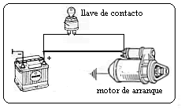

¿Qué es el sistema de arranque?
Para lograr que un motor arranque, éste debe girar a determinada velocidad de modo que pueda succionar aire y combustible hacia los cilindros y comprimirlos.
Aquí entra en función el sistema de arranque de un motor.
El potente motor eléctrico de arranque crea las revoluciones. Su eje lleva un pequeño piñón (rueda de engranaje) que se engancha con una gran corona dentada alrededor de la llanta del volante motor.
En un diseño de motor delantero, el arranque se monta muy abajo cerca de la parte posterior del motor.
El arranque necesita de corriente eléctrica intensa, la cual se genera en base de cables gruesos que llegan desde la batería. Ya que ningún simple interruptor manual puede encenderlo, es necesario un gran interruptor que pueda manejar la intensa corriente.
Nota: El interruptor debe ser encendido y apagado
rápidamente para evitar peligros, como posibles chispas.
Si mientras arranca el motor, el arranque permanece conectado,
el motor girará al arranque tan rápido que éste se puede llegar a dañar gravemente.
El interruptor de arranque por lo general funciona mediante la llave de contacto. Gire la llave más allá de la posición de "encendido" para alimentar de corriente al solenoide.
El interruptor de encendido tiene un muelle de retorno, por lo que tan pronto como usted suelte la llave, el muelle se retraerá y apagará el arranque.
Los muelles de retorno son necesarios debido a que el motor de arranque no debe de girar más de lo necesario para arrancar el motor.
Las principales partes del sistema de arranque de un automóvil son:
1.- El interruptor de encendido, que es la parte más sencilla del sistema y
da paso a la corriente eléctrica a través del bombín de llave única.
2.- La batería, encargada de proporcionar corriente a todos los sistemas eléctricos y,
por lo tanto, al motor de arranque.
3.- El motor de arranque, que es el encargado de convertir la energía eléctrica en
mecánica para dar al cigüeñal el primer impulso, la primera fuerza que desencadena su
funcionamiento. Es alimentado con corriente continua gracias imanes de tamaño reducido,
por lo que técnicamente funciona como cualquier otro motor eléctrico (gracias a la inducción)
y se une a este a través de un piñón que acciona el volante de inercia.
El motor de arranque es el más complejo, así que vamos a hablar con detalle de sus partes:
•El motor eléctrico es la base del motor de arranque y está formado, como cualquier otro motor eléctrico sencillo, por los siguientes elementos:
•La carcasa es la parte externa que sujeta los mecanismos internos del motor eléctrico.
•Las bobinas inductoras son cables enrollados, encargados de crear el campo magnético. Van sujetos a la carcasa.
•El inducido (o rotor) es la parte móvil del motor eléctrico conformado por el bobinado, el tambor y el colector.
•Las escobillas son las encargadas de transmitir la energía eléctrica al inducido por medio del colector.
•El bendix (o impulsor) es la parte unida al final del motor eléctrico que traslada la fuerza hacia el volante de inercia.
•El solenoide o automático es el encargado de desplazar el piñón (por medio de la horquilla) hacia el volante de inercia y al mismo tiempo cerrar el circuito que activa el motor eléctrico.
•La orquilla es el elemento que desplaza el bendix hacia la corona dentada del motor de inercia o biomasa.
•La tapa lateral es la pieza que une el solenoide al motor eléctrico y permite su anclado al motor, habitualmente, sobre la caja de cambios.

Averías
¿Por qué no funciona el motor de arranque?
Entre los fallos del propio sistema pueden ser las causadas por un piñón en mal estado (dientes rotos o desgastados), solenoide defectuoso, escobillas desgastadas, inducido del motor eléctrico quemado, etc. Si se produce una avería de este tipo en la mayoría de los casos se sustituye el motor de arranque, aunque se pueden reponer componentes como el solenoide, la palanca o las escobillas.
Otros fallos ajenos al motor de arranque que evitarán que funcione el coche pueden estar relacionados con otros elementos que forman el sistema de arranque:
1.- Malas conexiones eléctricas, debido a la corrosión o el desgaste las comunicación entre la batería y el sistema de arranque puede que no se esté llevando a cabo correctamente. Convendría revisar tanto los bornes como los posibles fusibles a lo largo del circuito.
2.- Un batería baja o defectuosa puede evitar que el motor eléctrico reciba la suficiente cantidad de corriente para moverse. Los casos en los que éste es el problema se escucha el giro lento del mismo o incluso no gira. Utilizando un probador de corriente (multímetro) debería mostrar un voltaje de alrededor de 13V, si es más bajo conviene que remplaces la batería por una de las mismas características.
3.- La falta de inyección de combustible es una de las causas de la falta
4.- Puede haber un falso contacto en los componentes eléctricos que forman la marcha debido a las vibraciones del motor o a la suciedad, esto se soluciona desmontándolo y comprobando las conexiones.
5.- Mal funcionamiento del sensor de presión del embrague. En los coches más modernos se implementa un sistema que te obliga a mantener pulsado el embrague. Si hubiera algún defecto en este sensor el coche simplemente no encenderá.